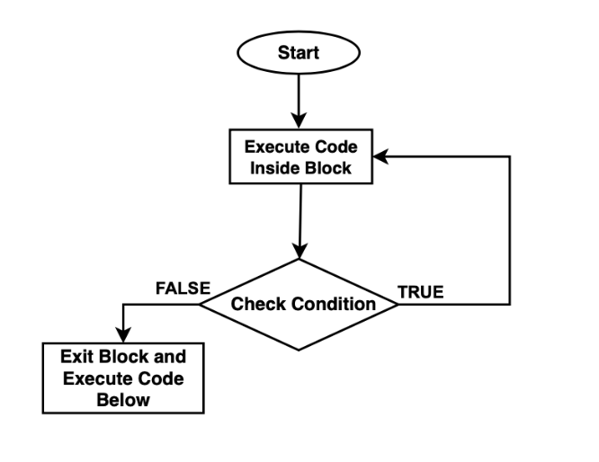

Day-05 Task Solution Code
Differences between for, while, and do-while loop
- For Loop: The for loop is used when the number of iterations is known. It consists of three parts: initialization, condition, and increment/decrement.
- While Loop: The while loop is used when the number of iterations is not known. It continues to execute as long as the specified condition is true.
- Do-While Loop: The do-while loop is similar to the while loop, but it guarantees that the loop body will be executed at least once, even if the condition is false.
